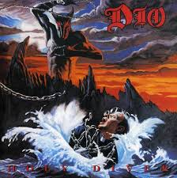

- PLAYLIST :

Time :
00:00
précédent
play
suivant
Volume :
Dio - Holly Diver
Twisted sister - Were Not Gonna Take It
Five Finger Death Punch - House Of The Rising Sun
Guardians Of The Galaxy (theme Song)
Steel Panther - Hells On Fire
Steel Panther - Livin On A Prayer
Five finger death punch - Jekyll and hyde
Gus g - Just cant let go
Shinedown - Simple man
killswitch Engage - My curse
Motorjesus - Trouble in motor city
Motorjesus - Speed of the beast
Queen - Bohemian Rhapsody
Rammstein - Feuer Frei
Marilyn Manson - Long Hard Road Out Of Hell
Queen - Killer Queen
Nickelbac - Silver side up
Stone sour - Bother
Sonic Syndicate - Only inhuman
Trivium - Departure
Tenacious D - The Metal
Rob Zombi - Reload
Iron Maiden - The Number of the Beast